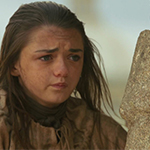

The Starks of Winterfell
Arya Stark
| 
|
Arya is the youngest daughter and third child of Lady Catelyn and Lord Eddard Stark, head of House Stark and Warden of the North. She was born soon after Eddard Stark's return from the Greyjoy Rebellion and raised at Winterfell. Arya has an older sister Sansa. She has an older brother Robb and two younger brothers Bran and Rickon. She also has a bastard half-brother Jon Snow. In her nine years, she has quickly shown herself to be an independent and wild-spirited girl. Unlike her sister, she rejects the notion that she must become a lady and marry for influence and power, showing no interest in the womanly arts of dancing, singing, and sewing; instead she revels in fighting and exploring, to the bemusement of her tutor Septa Mordane and parents. Known affectionately as "Arya Underfoot" by the staff and servants of Winterfell. |